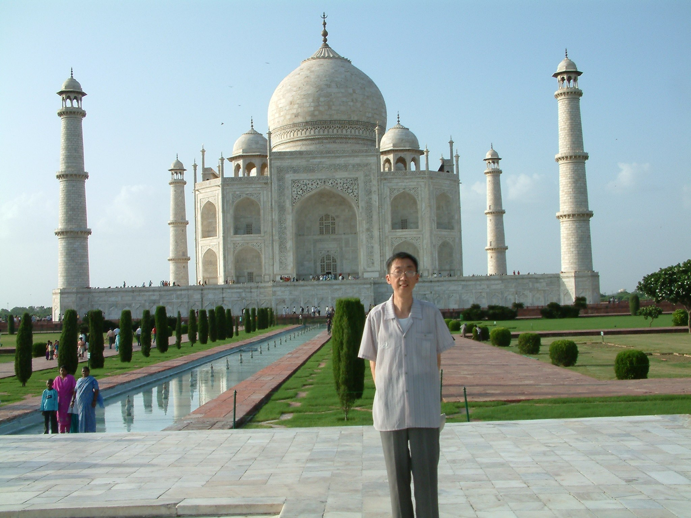

去印度旅游的航班定于晚上十点廿分起飞，强台风“麦莎”恰恰在此前赶到。这架势倒着实没见过：“麦莎”居然能穿过浦东国际机场候机大厅的门好多米，直扑人脸。
我与同事们在候机大厅里焦急地等待着，不时地到大厅大门处向外张望……
推迟起飞的航班，终于缓缓地降落在新德里机场。
来接机的印度导游，自我介绍叫“高胜利”。浓眉、大眼、健壮、潇洒、一脸阳光。与上海的坏天气形成鲜明的对比。尤其难得的是，高胜利讲得一口流利的汉语，一见面就不无自豪地说：“我毕业于尼赫鲁大学，我的中文是在印度学的，没有留过学，……”
在高胜利的带领下，我们游览了好多个古城堡，这是印度的特色。
小高健谈，还把他的情感揉进了讲解当中。
我们来到了被称为世界七大建筑奇迹之一的泰姬陵。
记得小时候在家中一本不知名的杂志的封底上见过这座美丽的“宫殿”，当时还不识字，问了大人，才知道这叫泰姬陵，在遥远的印度。
泰姬陵果然名不虚传，从大门到陵寝有一条红砂石筑成的甬道，两旁是人行道，中间有水池和喷泉，池水倒影，花草奇异，灌木浓荫，相互辉映。
我们沿着甬道走近泰姬陵，这座“人间建筑的奇迹”渐渐展示出她的容貌。她的上部为一高耸重叠的穹顶，环绕穹顶有三座小凉亭，以苍天为背景，突显她的优美轮廓，犹如蓝天上一朵飘浮的白云，难怪有人称之为“大理石之梦”。
但比这美丽的泰姬陵更打动我们的心的是高胜利给我们讲述的泰姬陵背后的爱情故事：
沙.贾汗皇帝为思念他的爱妻泰姬.玛哈尔,建造了这一陵墓。但陵墓建成后不到５年，他的儿子篡夺了王位，并把他囚禁在离开陵墓不远的阿格拉城堡中。
沙.贾汗被他儿子幽禁在古堡内有七年之久，一步也不能跨出古堡。他就经常站在古老的亭子那儿，遥望泰姬陵，从清晨望到黄昏，从黄昏又望到清晨。他老了，眼睛花了，站不动了，看不清了，他就在自己的卧床上放一块大钻石，让爱妻的陵墓投影在钻石上，仍然凄楚地望着它，在月色和睡梦中追忆与泰姬的往事……
随着游程的继续，我们与高胜利之间越来越熟了。
小学历史课上曾被印度种姓制度引起的深深的好奇心又一次袭来，我忍不住将小学时为了应付考试而背出的印度种姓制度的四个等级向小高复述一遍，并询问他是属于哪一等级的？
出乎意料的是，小高恰似胸有成竹，侃侃谈来。
他说，由于受传统的影响，现代印度的婚姻依然受种姓制度的制约，不同种姓之间一般不会通婚，当然，在受现代观念广泛冲击和熏陶的大城市里，情况要好一些。
而小高家是最高等级的婆罗门种姓。他妻子也是婆罗门种姓。而小高的嫂子却是第二等级的刹帝利种姓。
小高讲述了他家里的一些趣事来说明传统观念在老一辈身上的根深蒂固。
高胜利的老母亲等级观念森严。对小高哥哥的婚姻不满意。小高妻子和嫂子同在厨房干活，小高的妻子若有所闪失，老母亲总是护着，而嫂子如稍有失手，老母亲便会毫不留情地一顿教训，有时还加上一句：“只有你这种‘阶级’的人，才会干出这等事来！”
当我们问及他的嫂子对老母亲是否有所不满时？小高连连摆手：“不、不、不，在我们印度，对老人十分尊重，明知是老人的旧观念，也都十分宽容的。比如说，嫂子挨了训，便会笑着走到隔壁房间，手捂嘴巴，悄悄地跟我们大家说：嘻嘻，刚才我又被老人家骂了……。绝对一点不往心里去的”。
高胜利用他娴熟的汉语，给我们展示了印度社会尊老的一角。
将要离开印度的时候，我又问了小高最后一个问题：“尼赫鲁大学的中文系是用什么方法培养你的口语的？”
小高笑笑说：“我一有空，就跑到中国领事馆缠着工作人员说话。”
哦！原来如此。
(本文刊登在2017.5.9《上海老年报》)
